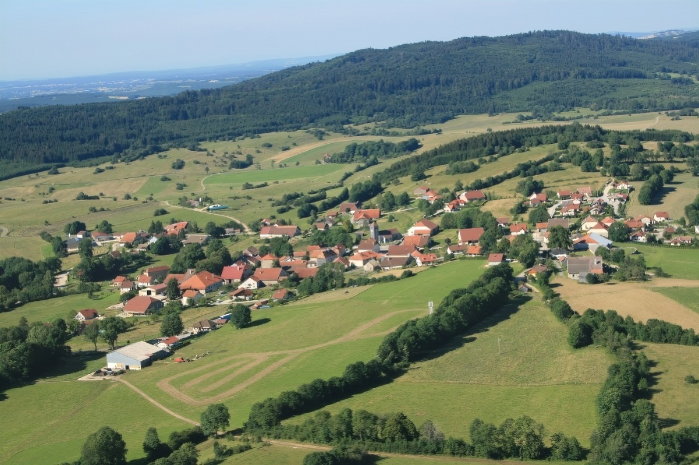
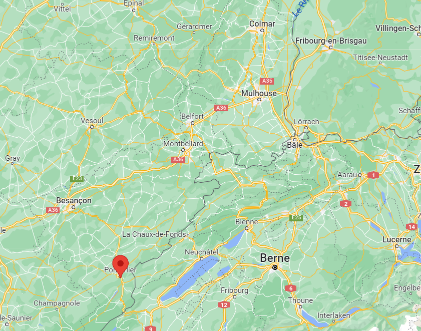
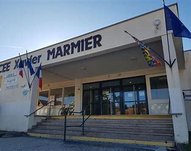

Vallet Evan
 I was born on 22 October 2004 from Septfontaine in the Doubs, known for its karting track, like almost all my family, my father is a logger which corresponds to a truck driver transporting wood from the forestry operations to the sawmills and my mother is an accountant at the incineration plant in Pontarlier.
School
I did my college as well as my high school in Pontarlier, at the Lycée Xavier Marmier, in première I took the specialties physics chemistry digital computer science and life and earth science, then in terminal I kept NSI and SVT.
I'm currently training at the iut in colmar in network and telecommunication. I chose network and telecommunication, after having been to the open door in Montbéliard, I preferred colmar to Montbéliard thanks to the dev-cloud training present in colmar but not in Montbéliard.